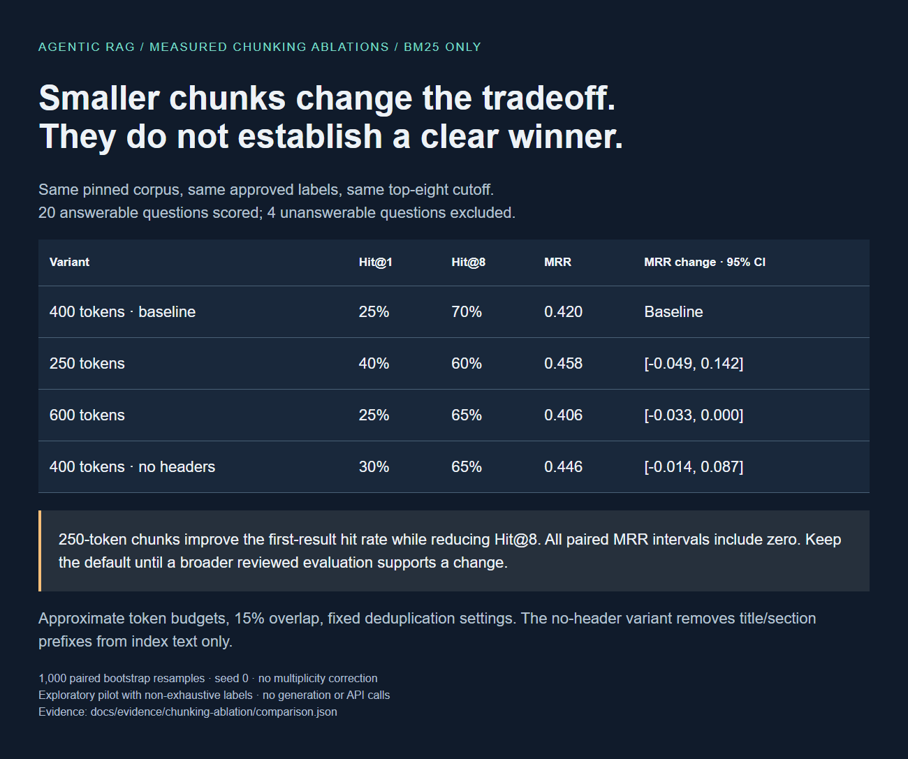
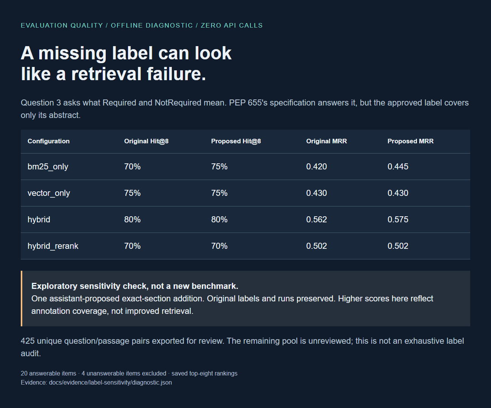

A reproducible agentic RAG platform: pinned source documents, reviewed questions, competing retrieval strategies, and evidence you can inspect.
Hybrid retrieved a labeled source in the top eight for 16 of 20 answerable questions. Its paired MRR improvement over BM25 remains inconclusive: the 95% interval includes zero.
Hit@8 measures source retrieval, not answer correctness. Four unanswerable questions are excluded from retrieval scoring.
| Configuration | Hit@1 | Hit@8 | MRR | Evidence |
|---|---|---|---|---|
| BM25 | 25% | 70% | 0.420 | Run report ↗ |
| Vector | 25% | 75% | 0.430 | Run report ↗ |
| Hybrid | 40% | 80% | 0.562 | Run report ↗ |
| Hybrid + reranker | 35% | 70% | 0.502 | Run report ↗ |
Generator: Claude Sonnet 5. Judges: Claude Haiku 4.5. One generation per question/configuration; no tuning against these outcomes.
| Configuration | Judged correctness | 95% CI | Faithfulness | Correct abstention | Errors | Source |
|---|---|---|---|---|---|---|
| BM25 | 95% (n=20) | 85% to 100% | 92.3% (n=19) | 100% (n=4) | 0 | Full evidence ↗ |
| Vector | 85% (n=20) | 70% to 100% | 100.0% (n=17) | 100% (n=4) | 0 | Full evidence ↗ |
| Hybrid | 95% (n=20) | 85% to 100% | 93.4% (n=19) | 100% (n=4) | 0 | Full evidence ↗ |
| Hybrid + reranker | 90% (n=20) | 75% to 100% | 94.5% (n=18) | 100% (n=4) | 0 | Full evidence ↗ |
326 API completion attempts. Recorded usage estimate: $1.4200, plus $0.0120 reserved for 1 unmetered failures. See the usage ledger. The interrupted run is preserved in the failure archive; its unknown cost was never reset to zero.
A shared US$3 dispatch ceiling, buffered input counts, maximum output reservations, and zero automatic SDK retries protect the approved allowance. Billing adjustments are not an invoice guarantee.
Automated judges are not human ground truth. Correctness denominators are shown explicitly; errors and missing judgments must be read alongside the score. Answerable-question abstentions count as incorrect; faithfulness excludes abstentions. An all-success bootstrap interval does not prove perfect accuracy beyond this small sample. Human-judge calibration and a held-out benchmark remain outstanding.
No. PEP 484 explicitly states that Python will remain a dynamically typed language, and the authors have no desire to ever make type hints mandatory, even by convention. No type checking happens at runtime under this proposal; instead it assumes a separate off-line type checker that users can run voluntarily, acting like a powerful linter.
Reference: No. PEP 484 does not require runtime type checking.
The context does not cover this.
Reference: A union type, equivalent to Union[X, Y].
Because type comments aren't actually part of the language, so a tool wanting to parse them needs a custom parser instead of simply being able to use Python's built-in `ast` module, as would be possible with dedicated annotation syntax.
Reference: Its rationale says annotation syntax can be parsed with ast, while type comments require a custom parser.
Judge grounding concern: Dedicated annotation syntax would allow using the built-in `ast` module — While the context implies this by contrasting the custom parser requirement for type comments with the benefits of making annotation syntax 'a core part of the language,' it does not explicitly state that the built-in `ast` module can be used with dedicated annotation syntax.
The context does not cover this.
Reference: The provided PEP corpus does not contain that information.
250-token chunks raised BM25 Hit@1 from 25% to 40%, while Hit@8 fell from 70% to 60%. All paired MRR intervals included zero. The experiment does not justify changing the default.
Inspect the ablation report ↗No. PEP 484 (and the related PEP 3107/typing proposal) specifies type hints only for static type checkers and other third-party tools; they are passive annotations that do not trigger any runtime type checking. As stated in the evidence, "no type checking happens at runtime" under this model—type hints are meant to be analyzed by separate off-line static type checkers, not enforced by the Python interpreter itself.
answered · 2 steps ↗Because type comments aren't actually part of the language syntax, any tool that wants to parse them must implement a custom parser rather than being able to rely on the standard `ast` module. Annotation syntax, by contrast, is a core part of the grammar, so it's parsed natively by `ast` and can even be introspected at runtime via `__annotations__`.
answered · 2 steps ↗PEP 526 defines the variable/field annotation syntax (e.g., `name: type` or `name: type = value`) used by data classes. It identifies that one limitation of the older type-comment approach (used before PEP 526) is that "there's no way to annotate the type of an undefined variable; one needs to initialize it to None (e.g. a = None # type: int)." PEP 526's new syntax fixes this by allowing a variable to be annotated without an initial value, e.g. `captain: str # Note: no initial value!`.
answered · 2 steps ↗A structurally valid cited answer is not proof of factual correctness. Single trajectories are demonstrations, not pass@k estimates.


Dataset 27b46e65f45d ·
evaluation set 1f48f2e04ef7. Each run records its configuration, prompts,
code revision, item results and uncertainty. Full documents are fetched from the
pinned Python PEP corpus; selected passages appear in evidence artifacts.